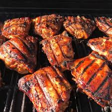

Shoyu Chicken

Description
Shoyu Chicken is a type of teriyaki marinade that can be found in plate lunches throughout Hawaii. A plate lunch is a popular type of Hawaiian meal that consists of rice, meats, and vegetables. It's called plate lunch because everything is served together on one plate. The marinade used in this recipe can also be used for beef. This recipe make a lot of marinade - it can be scaled down if you don't need much
Ingredients
- chicken thighs
- 4 cups soy sauce
- 4 cups sugar/li>
- 3 garlic cloves
- 1 finger of ginger(smashed)
Recipe Steps
- Mix all ingredients together in a large bowl. Be sure that sugar dissolves completely.
- Add chicken thighs (recipe will marinate up to 3 pounds of meat). For best flavor results, refrigerate overnight.
- Place in a large baking dish and cook in a 400 degree oven for about 45 minutes or until done.
- Chicken can also be cooked over a grill
back to recipes